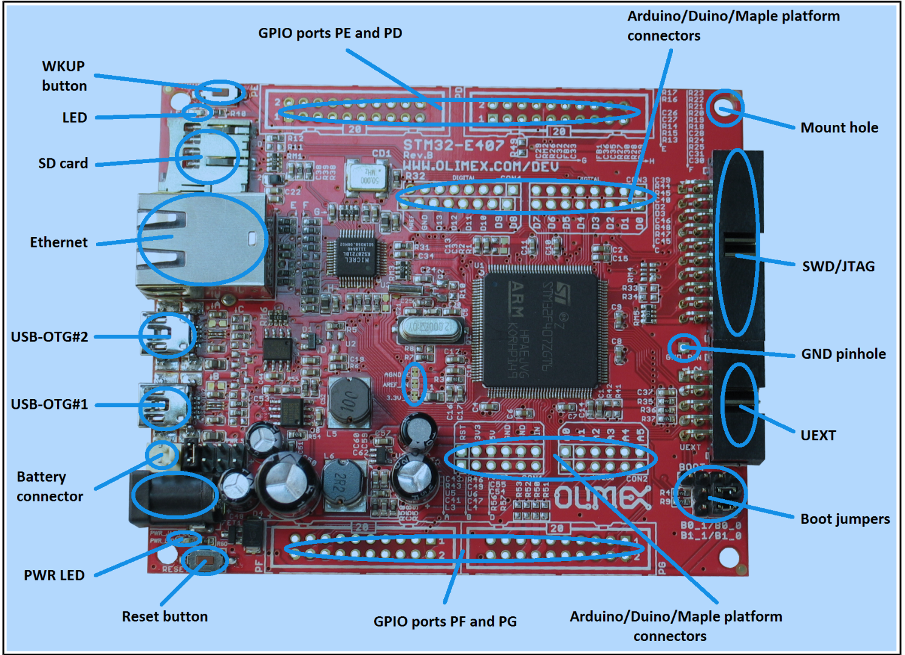

Blinky, Your Hello World!¶
Objective¶
Learn how to use packages from a default application repository of Mynewt to build your first Hello World application (Blinky) on a target board. Once built using the newt tool, this application will blink the LED lights on the target board. Fun stuff!
This tutorial will guide you to achieve the following, assuming you have already set up the environment on your computer to use Mynewt OS and newt tool:
- Download packages and use tools to create a runtime image for a board to make its LED blink. You have two choices here:
Time Requirement: Allow yourself a couple of hours for this project if you are relatively new to embedded systems and playing with development boards. Those jumpers can be pesky!
What you need¶
- STM32-E407 development board from Olimex. You can order it from http://www.mouser.com, http://www.digikey.com, and other places.
- ARM-USB-TINY-H connector with JTAG interface for debugging ARM microcontrollers (comes with the ribbon cable to hook up to the board)
- USB A-B type cable to connect the debugger to your personal computer
- Personal Computer with Mac OS (Mac: OS X Yosemite Version 10.10.5) or Linux box (Ubuntu 14.10: Utopic Unicorn)
- An account on Github repository and git installed on your computer.
- It is assumed you have already installed newt tool.
- It is assumed you already installed native tools as described here
Also, we assume that you're familiar with UNIX shells. Let's gets started!
Use SRAM to make LED blink¶
If you wish to build the image to run from the onboard SRAM on Olimex board, follow the steps below:
Prepare the Software¶
- Make sure the PATH environment variable includes the $HOME/dev/go/bin directory.
Create a project.¶
Create a new project to hold your work. For a deeper understanding, you can read about project creation in Get Started -- Creating Your First Project or just follow the commands below.
$ mkdir ~/dev
$ cd ~/dev
$ newt new myproj
Downloading project skeleton from apache/incubator-mynewt-blinky...
Installing skeleton in myproj...
Project myproj successfully created.
$cd myproj
$ newt install -v
apache-mynewt-core
Downloading repository description for apache-mynewt-core... success!
...
apache-mynewt-core successfully installed version 0.7.9-none
Create a target¶
Change directory to ~/dev/myproj directory and define the blinky target inside myproj, using the newt tool. Starting with the target name, assign specific aspects of the project, as shown below, to pull the appropriate packages and build the right bundle or list for the board. For example, we set the build_profile, board support package (bsp), and app.
$ newt target create blinky
$ newt target set blinky build_profile=debug
$ newt target set blinky bsp=@apache-mynewt-core/hw/bsp/olimex_stm32-e407_devboard
$ newt target set blinky app=apps/blinky
$ newt target show blinky
targets/boot_olimex
app=apps/blinky
bsp=hw/bsp/olimex_stm32-e407_devboard
build_profile=debug
Build the image¶
Next, let's build the image with the above values assigned. By default, the linker script within the hw/bsp/olimex_stm32-e407_devboard package builds an image for flash memory, which we don't want; instead, we want an image for the SRAM, so you need to switch that script with run_from_sram.ld.
(We are working to simplify this scheme whereby an executable for a project will correctly elect the linker scripts and generate the relevant image. For example, the scheme will key on project identity such as bootloader, RAM, Flash (default) and build accordingly.) .
Afer you build the target, you can find the executable blinky.elf in the project directory ~/dev/myproj/bin/blinky/apps/blinky/.
$ cd ~/dev/myproj/repos/apache-mynewt-core/hw/bsp/olimex_stm32-e407_devboard/
$ diff olimex_stm32-e407_devboard.ld run_from_sram.ld
(some diff will be displayed)
$ cp run_from_sram.ld olimex_stm32-e407_devboard.ld
$ cd ~/dev/myproj
$ newt build blinky
Compiling case.c
Compiling suite.c
...
Linking blinky.elf
App successfully built:~/dev/myproj/bin/blinky/apps/blinky/blinky.elf
$ ls ~/dev/myproj/bin/blinky/apps/blinky/
blinky.elf blinky.elf.bin blinky.elf.cmd
blinky.elf.lst blinky.elf.map
Prepare the hardware to boot from embedded SRAM¶
- Locate the boot jumpers on the board.


-
B1_1/B1_0 and B0_1/B0_0 are PTH jumpers. Note that because the markings on the board may not always be accurate, when in doubt, you should always refer to the manual for the correct positioning. Since the jumpers are a pair, they should move together, and as such, the pair is responsible for the boot mode when bootloader is present. To locate the bootloader, the board searches in three places: User Flash Memory, System Memory or the Embedded SRAM. For this Blinky project, we will configure it to boot from SRAM by jumpering B0_1 and B1_1.
-
Connect USB-OTG#2 in the picture above to a USB port on your computer (or a powered USB hub to make sure there is enough power available to the board).
-
The red PWR LED should be lit.
-
Connect the JTAG connector to the SWD/JTAG interface on the board. The other end of the cable should be connected to the USB port or hub of your computer.
Let's Go!¶
- Ensure that you are in the blinky project directory with the blinky.elf executable. Run the debug command in the newt tool. You'll see some status messages as shown below. In case you need to halt the debugging session, you can issue an
-c "reset halt"command.
$ cd ~/dev/core
$ newt debug blinky
Debugging with ~/dev/core/hw/bsp/olimex_...
Debugging ~/dev/core/project/blinky/bin/blinky/blinky.elf
GNU gdb (GNU Tools for ARM Embedded Processors) 7.8.0.20150604-cvs
Copyright (C) 2014 Free Software Foundation, Inc.
License GPLv3+: GNU GPL version 3 <http://gnu.org/licenses/gpl.html>
...
(info)
...
target state: halted
target halted due to debug-request, current mode: Thread
xPSR: 0x01000000 pc: 0x080003c0 msp: 0x10010000
Info : accepting 'gdb' connection on tcp/3333
Info : device id = 0x10036413
Info : flash size = 1024kbytes
Check the value of the msp (main service pointer) register. If it is not 0x10010000 as indicated above, you will have to manually set it after you open the gdb tool and load the image on it. For example,
(gdb) set $msp=0x10010000
Now load the image and type "c" or "continue" from the GNU debugger.
(gdb) load ~/dev/myproj/bin/blinky/apps/blinky/blinky.elf
Loading section .text, size 0x16b88 lma 0x20000000
Loading section .ARM.exidx, size 0x18 lma 0x20016b88
Loading section .data, size 0x9ec lma 0x20016ba0
Start address 0x200004b8, load size 95628
Transfer rate: 74 KB/sec, 3825 bytes/write.
(gdb) c
Continuing.
- Voilà! The board's LED should be blinking at 1 Hz. Success!
Use flash to make LED blink¶
If you wish to build the image to run from the onboard flash memory on Olimex board, follow the steps below:
-
Configure the board to boot from flash by moving the two jumpers together to B0_0 and B1_0. Refer to the pictures of the board under the section titled "Prepare the hardware to boot from embedded SRAM".
You will have to reset the board once the image is uploaded to it.
-
If you skipped the first option for the project (downloading an image to SRAM), then skip this step. Otherwise, continue with this step.
By default, the linker script (olimex_stm32-e407_devboard.ld) is configured to run from bootloader and flash. However, if you first ran the image from SRAM you had changed olimex_stm32-e407_devboard.ld to match run_from_sram.ld. You will, therefore, return to defaults with olimex_stm32-e407_devboard.ld linker script matching the contents of 'run_from_loader.ld'. Return to the project directory.
$ cd ~/dev/myproj/repos/apache-mynewt-core/hw/bsp/olimex_stm32-e407_devboard/ $ diff olimex_stm32-e407_devboard.ld run_from_sram.ld $ diff olimex_stm32-e407_devboard.ld run_from_loader.ld (some diff will be displayed) $ cp run_from_loader.ld olimex_stm32-e407_devboard.ld $ cd ~/dev/myproj
- In order to run the image from flash, you need to build the bootloader as well. The bootloader does the initial set up of the Olimex board and then transfers control to the image stored at a location in flash known to it.
Let's create boot_olimex:
$ newt target create boot_olimex
$ newt target set boot_olimex build_profile=optimized
$ newt target set boot_olimex bsp=@apache-mynewt-core/hw/bsp/olimex_stm32-e407_devboard
$ newt target set boot_olimex app=@apache-mynewt-core/apps/boot
$ newt target show boot_olimex
targets/boot_olimex
app=app=@apache-mynewt-core/apps/boot
bsp=@apache-mynewt-core/hw/bsp/olimex_stm32-e407_devboar
build_profile=optimized
- Now let's build both targets now.
$ newt build boot_olimex
...
App successfully built: ~/dev/myproj/bin/boot_olimex/apps/boot/boot.elf
$ newt build blinky
...
Linking blinky.elf
App successfully built: ~/dev/myproj/bin/blinky/apps/blinky/blinky.elf
- Create the blinky image and download the bootloader and the image to flash ... in a flash! When creating an image, you can assign a version number to your image; here we use '1.2.3'
$ newt create-image blinky 1.2.3
App image succesfully generated: ~/dev/myproj/bin/blinky/apps/blinky/blinky.img
Build manifest: ~/dev/myproj/bin/blinky/apps/blinky/manifest.json
$ newt load boot_olimex
Downloading~/dev/myproj/bin/boot_olimex/apps/boot/boot.elf.bin to 0x08000000
Open On-Chip Debugger 0.9.0 (2015-11-15-13:10)
...
shutdown command invoked
$ newt load blinky
Downloading ~/dev/myproj/bin/blinky/apps/blinky/blinky.img to 0x08020000
Open On-Chip Debugger 0.9.0 (2015-11-15-13:10)
...
shutdown command invoked
- Voilà! The LED should be blinking! Success!
But wait...not so fast. Let's double check that it is indeed booting from flash and making the LED blink from the image in flash. Pull the USB cable off the Olimex JTAG adaptor, severing the debug connection to the JTAG port. Next power off the Olimex board by pulling out the USB cable from the board. Wait for a couple of seconds and plug the USB cable back to the board.
The LED light will start blinking again. Success!
Note #1: If you want to download the image to flash and a gdb session opened up, use newt debug blinky after newt download blinky.
$ newt debug blinky
Debugging with ~/dev/myproj/hw/bsp/olimex_stm32-e407_...
Debugging ~/dev/myproj/project/blinky/bin/blinky/blinky.elf
GNU gdb (GNU Tools for ARM Embedded Processors) 7.8.0.20150604-cvs
Copyright (C) 2014 Free Software Foundation, Inc.
License GPLv3+: GNU GPL version 3 <http://gnu.org/licenses/gpl.html>
...
(info)
...
target state: halted
target halted due to debug-request, current mode: Thread
xPSR: 0x01000000 pc: 0x08000250 msp: 0x10010000
Info : accepting 'gdb' connection from 3333
Info : device id = 0x10036413
Info : flash size = 1024kbytes
Reset_Handler () at startup_STM32F40x.s:199
199 ldr r1, =__etext
(gdb)
Note #2: If you want to erase the flash and load the image again you may use the following commands from within gdb. flash erase_sector 0 0 x tells it to erase sectors 0 through x. When you ask it to display (in hex notation) the contents of the sector starting at location 'lma,' you should see all f's. The memory location 0x8000000 is the start or origin of the flash memory contents and is specified in the olimex_stm32-e407_devboard.ld linker script. The flash memory locations is specific to the processor.
(gdb) monitor flash erase_sector 0 0 4
erased sectors 0 through 4 on flash bank 0 in 2.296712s
(gdb) monitor mdw 0x08000000 16
0x08000000: ffffffff ffffffff ffffffff ffffffff ffffffff ffffffff ffffffff ffffffff
(0x08000020: ffffffff ffffffff ffffffff ffffffff ffffffff ffffffff ffffffff ffffffff
(0x08000000: ffffffff ffffffff ffffffff ffffffff ffffffff ffffffff ffffffff ffffffff
(0x08000020: ffffffff ffffffff ffffffff ffffffff ffffffff ffffffff ffffffff ffffffff
(gdb) monitor flash info 0
Conclusion¶
Congratulations! You have now tried out a project on actual hardware. If this is your first time to embedded systems, this must feel like the best hands-on and low-level "Hello World" program ever.
Good, we have more fun tutorials for you to get your hands dirty. Be bold and try other Blinky-like tutorials.
If you see anything missing or want to send us feedback, please do so by signing up for appropriate mailing lists on our Community Page
Keep on hacking and blinking!